Optics shlukování – Vývoj
Generace 0


Generace 1


Posun centroidů mezi generací 0 → 1:
- Shluk 0: 733.2587

Generace 2

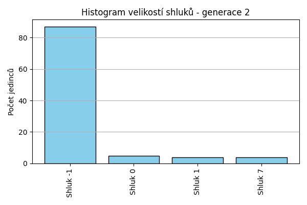
Posun centroidů mezi generací 1 → 2:
- Shluk 0: 113.2701
- Shluk 1: 529.9578
- Shluk 2: 954.2130
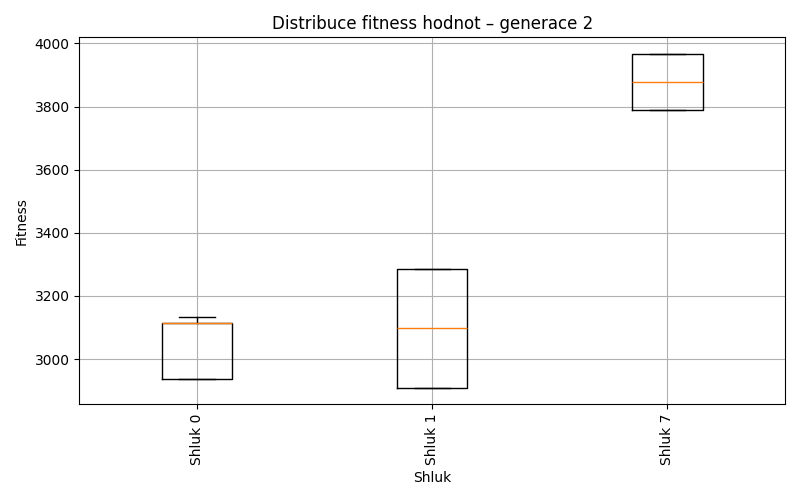
Generace 3

Posun centroidů mezi generací 2 → 3:
- Shluk 0: 427.7986
- Shluk 1: 102.2758
- Shluk 2: 879.1923

Generace 4

Posun centroidů mezi generací 3 → 4:
- Shluk 0: 578.1594
- Shluk 1: 700.8412
- Shluk 2: 322.5932
- Shluk 3: 680.5961
- Shluk 4: 496.6680
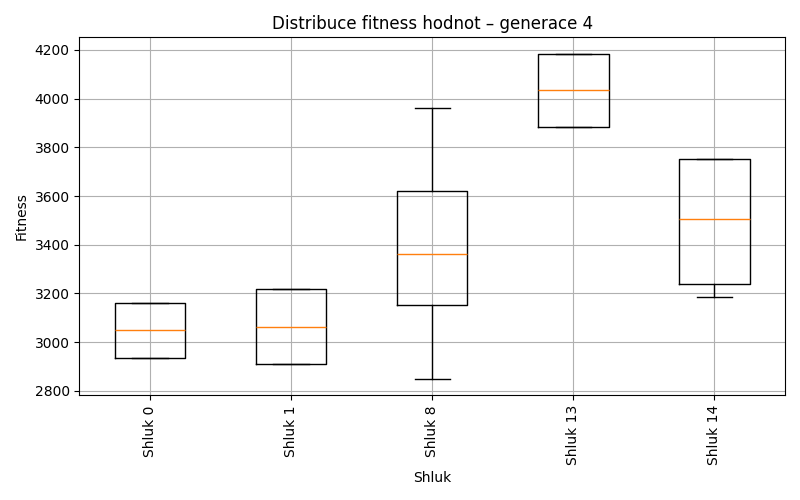
Generace 5
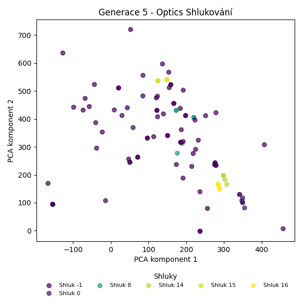

Posun centroidů mezi generací 4 → 5:
- Shluk 0: 612.5187
- Shluk 1: 586.0325
- Shluk 2: 491.4181
- Shluk 3: 615.7428
- Shluk 4: 478.0918
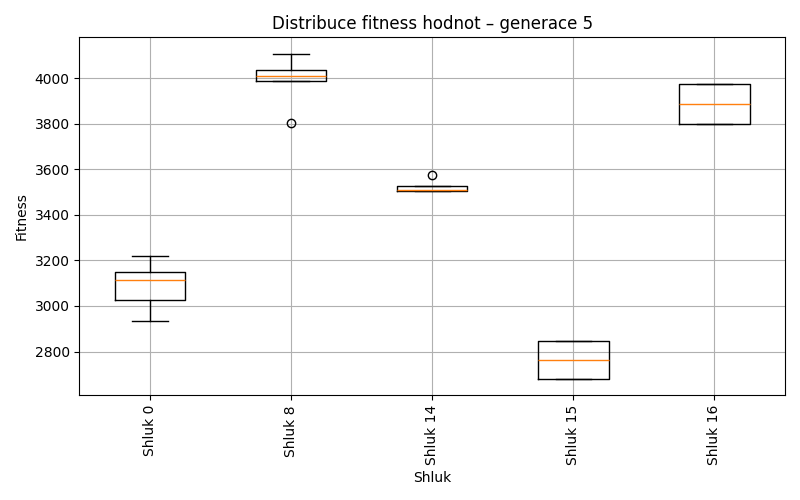
Generace 6
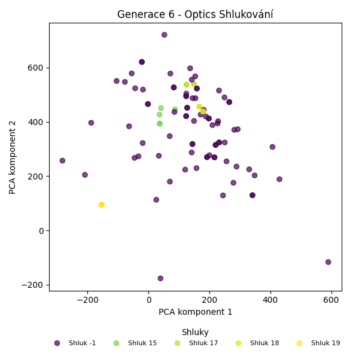
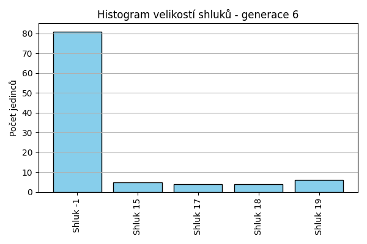
Posun centroidů mezi generací 5 → 6:
- Shluk 0: 687.7569
- Shluk 1: 606.3012
- Shluk 2: 824.3966
- Shluk 3: 1045.9319
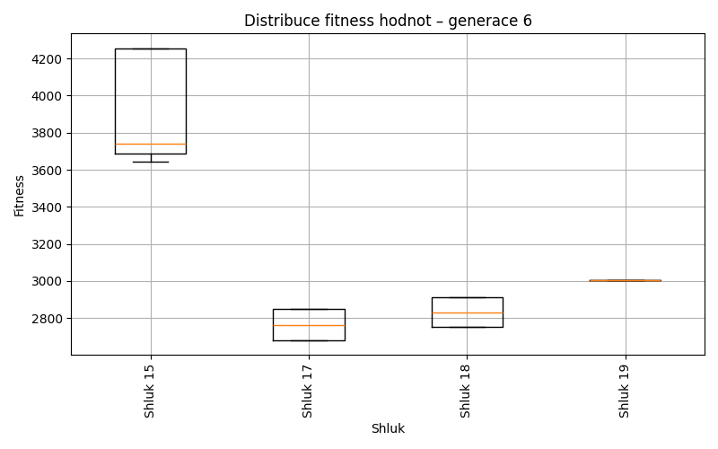
Generace 7
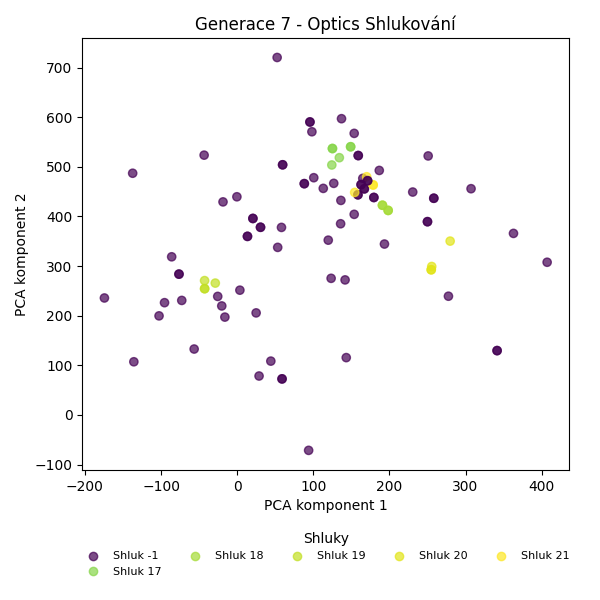

Posun centroidů mezi generací 6 → 7:
- Shluk 0: 24.6827
- Shluk 1: 240.6244
- Shluk 2: 549.5388
- Shluk 3: 1085.9126

Generace 8

Posun centroidů mezi generací 7 → 8:
- Shluk 0: 88.7509
- Shluk 1: 179.5490
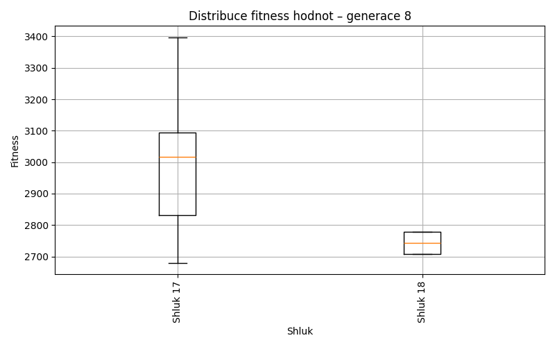
Generace 9

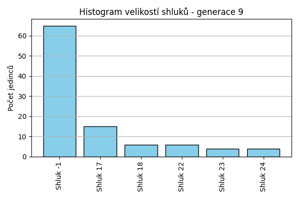
Posun centroidů mezi generací 8 → 9:
- Shluk 0: 44.6258
- Shluk 1: 14.5512
Generace 10

Posun centroidů mezi generací 9 → 10:
- Shluk 0: 195.5228
- Shluk 1: 240.0691
- Shluk 2: 445.6744
- Shluk 3: 368.5916
- Shluk 4: 575.2161

Generace 11


Posun centroidů mezi generací 10 → 11:
- Shluk 0: 141.0239
- Shluk 1: 140.4254

Generace 12

Posun centroidů mezi generací 11 → 12:
- Shluk 0: 122.9399
- Shluk 1: 310.2116
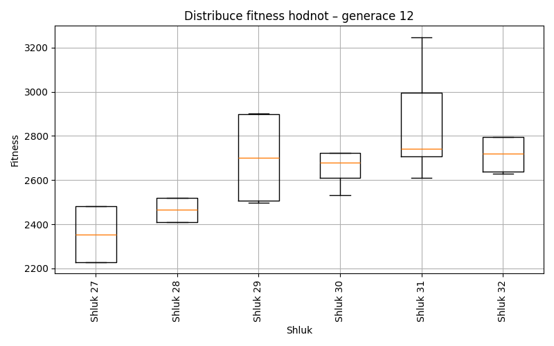
Generace 13

Posun centroidů mezi generací 12 → 13:
- Shluk 0: 7.0999
- Shluk 1: 242.5205
- Shluk 2: 222.1457
Generace 14

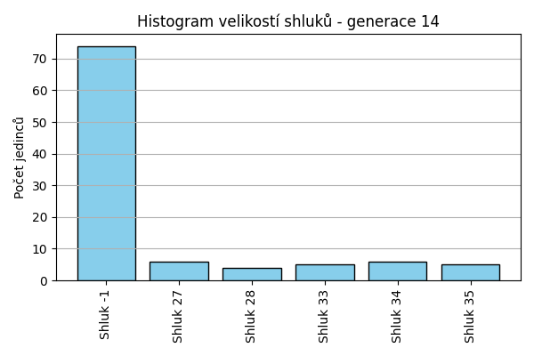
Posun centroidů mezi generací 13 → 14:
- Shluk 0: 199.7893
- Shluk 1: 165.7443
- Shluk 2: 193.3770
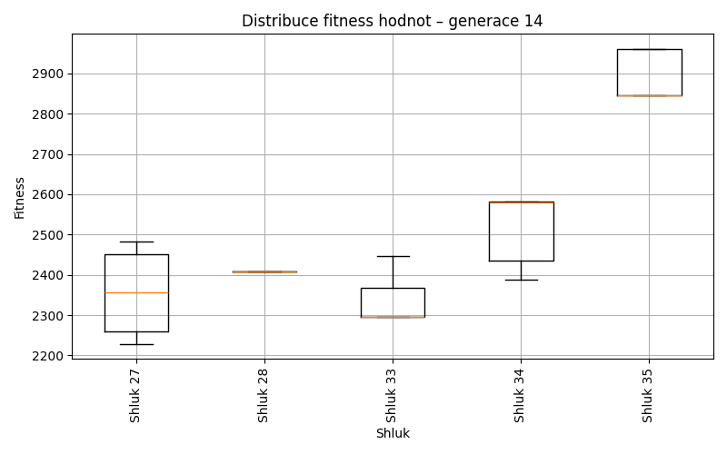
Generace 15


Posun centroidů mezi generací 14 → 15:
- Shluk 0: 88.6161
- Shluk 1: 120.3735
- Shluk 2: 16.8539
- Shluk 3: 189.8153
- Shluk 4: 184.7039

Generace 16


Posun centroidů mezi generací 15 → 16:
- Shluk 0: 218.9173
- Shluk 1: 132.1065
- Shluk 2: 118.0017
- Shluk 3: 118.7110
- Shluk 4: 166.5728
- Shluk 5: 205.7123
Generace 17


Posun centroidů mezi generací 16 → 17:
- Shluk 0: 181.2911
- Shluk 1: 5.0623
- Shluk 2: 111.2187
- Shluk 3: 86.2921
- Shluk 4: 4.0093
- Shluk 5: 205.3537
Generace 18
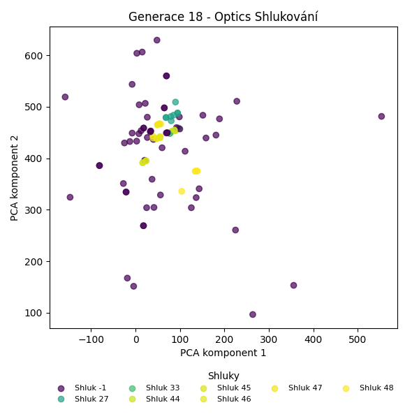
Posun centroidů mezi generací 17 → 18:
- Shluk 0: 210.5379
- Shluk 1: 84.5337
- Shluk 2: 69.1854
- Shluk 3: 152.6957
- Shluk 4: 205.3553
- Shluk 5: 157.6544

Generace 19


Posun centroidů mezi generací 18 → 19:
- Shluk 0: 90.2887
- Shluk 1: 190.2660
- Shluk 2: 101.3226
- Shluk 3: 295.3538
- Shluk 4: 252.8263
- Shluk 5: 211.8025
- Shluk 6: 267.2255

Generace 20
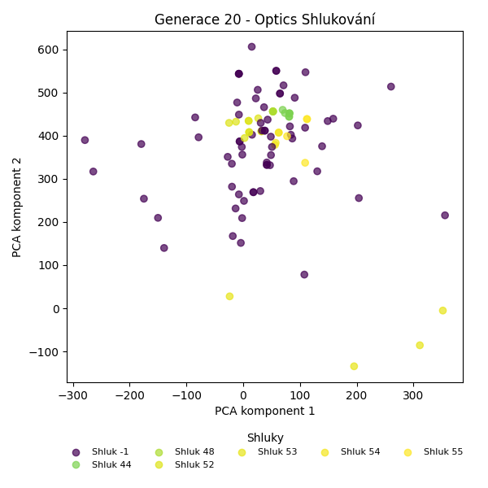

Posun centroidů mezi generací 19 → 20:
- Shluk 0: 63.8076
- Shluk 1: 162.0960
- Shluk 2: 133.1364
- Shluk 3: 292.2972
- Shluk 4: 257.6374
- Shluk 5: 822.8663

Generace 21

Posun centroidů mezi generací 20 → 21:
- Shluk 0: 122.2136
- Shluk 1: 9.7230
- Shluk 2: 109.1286
- Shluk 3: 455.9558
- Shluk 4: 552.2712

Generace 22

Posun centroidů mezi generací 21 → 22:
- Shluk 0: 78.1271
- Shluk 1: 552.6809
- Shluk 2: 233.9900
Generace 23


Posun centroidů mezi generací 22 → 23:
- Shluk 0: 203.3444
- Shluk 1: 214.8804
- Shluk 2: 340.9072

Generace 24

Posun centroidů mezi generací 23 → 24:
- Shluk 0: 363.7546
- Shluk 1: 445.4667
- Shluk 2: 2.2371
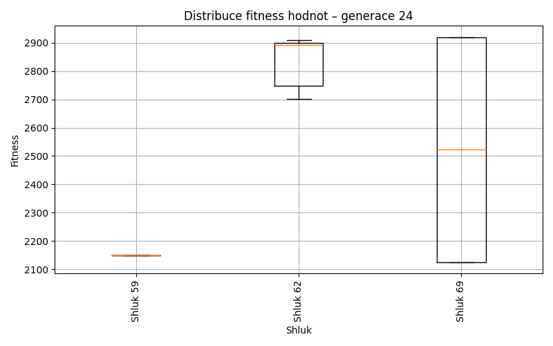
Generace 25

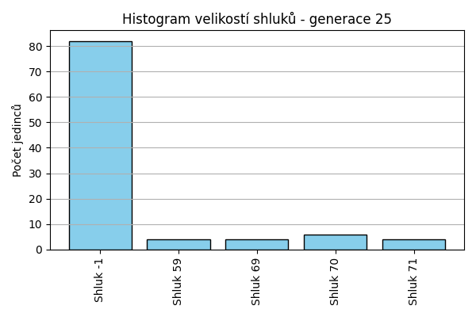
Posun centroidů mezi generací 24 → 25:
- Shluk 0: 366.2500
- Shluk 1: 545.4775
- Shluk 2: 420.7543

Generace 26
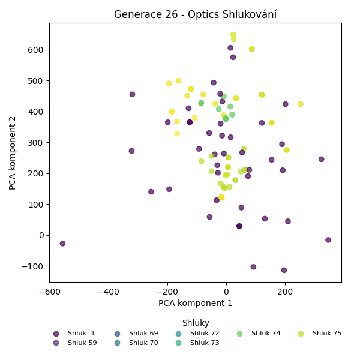

Posun centroidů mezi generací 25 → 26:
- Shluk 0: 313.2261
- Shluk 1: 75.5254
- Shluk 2: 453.9060
- Shluk 3: 381.6785
Generace 27
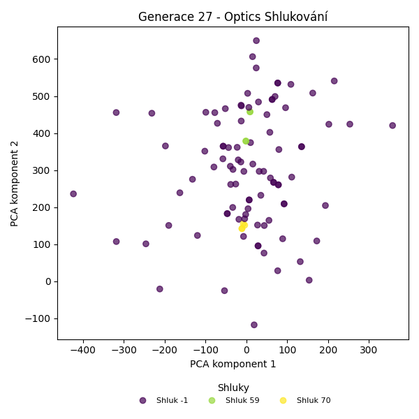

Posun centroidů mezi generací 26 → 27:
- Shluk 0: 219.1469
- Shluk 1: 455.7206

Generace 28

Posun centroidů mezi generací 27 → 28:
- Shluk 0: 567.6784
- Shluk 1: 533.6019
Generace 29


Posun centroidů mezi generací 28 → 29:
- Shluk 0: 478.5769
- Shluk 1: 527.5051
- Shluk 2: 161.3947
Generace 30
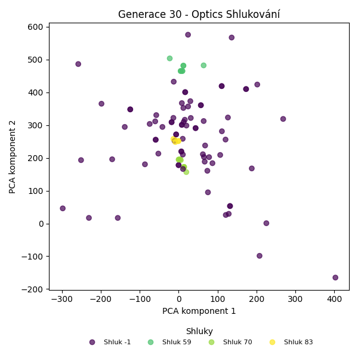
Posun centroidů mezi generací 29 → 30:
- Shluk 0: 229.3319
- Shluk 1: 314.6748
- Shluk 2: 169.5409

Generace 31
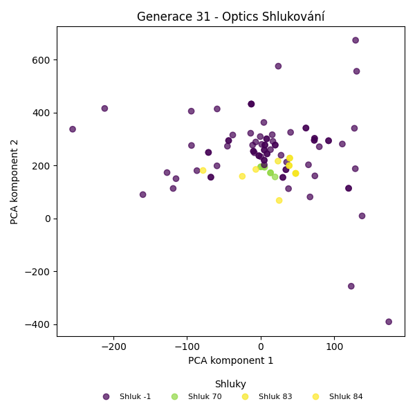

Posun centroidů mezi generací 30 → 31:
- Shluk 0: 214.9147
- Shluk 1: 373.1811
- Shluk 2: 662.6915

Generace 32


Posun centroidů mezi generací 31 → 32:
- Shluk 0: 229.5995
- Shluk 1: 260.1603
- Shluk 2: 499.5134

Generace 33

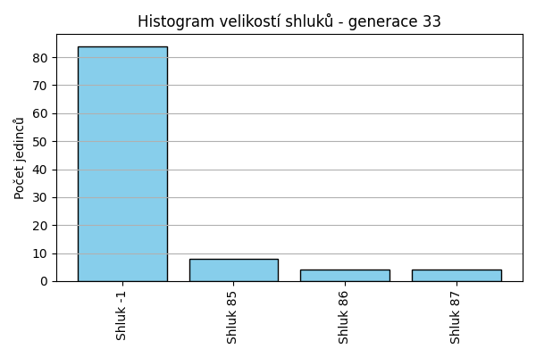
Posun centroidů mezi generací 32 → 33:
- Shluk 0: 21.9129
- Shluk 1: 113.6627
- Shluk 2: 183.2721
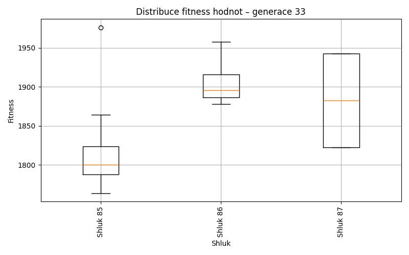
Generace 34
Posun centroidů mezi generací 33 → 34:
- Shluk 0: 5.2471
- Shluk 1: 345.1796
- Shluk 2: 598.2177

Generace 35

Posun centroidů mezi generací 34 → 35:
- Shluk 0: 217.7969
- Shluk 1: 93.8673
- Shluk 2: 591.6363
Generace 36


Posun centroidů mezi generací 35 → 36:
- Shluk 0: 10.8799
- Shluk 1: 41.8315
- Shluk 2: 8.6195
- Shluk 3: 153.7381
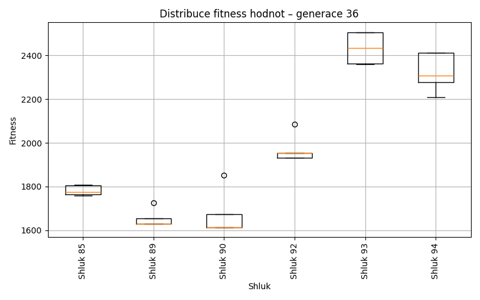
Generace 37


Posun centroidů mezi generací 36 → 37:
- Shluk 0: 7.3848
- Shluk 1: 165.3180
- Shluk 2: 84.8227
- Shluk 3: 96.1127
- Shluk 4: 156.9399
- Shluk 5: 163.4809

Generace 38

Posun centroidů mezi generací 37 → 38:
- Shluk 0: 12.3032
- Shluk 1: 115.3591
- Shluk 2: 152.2934
- Shluk 3: 143.6938
- Shluk 4: 149.5972
- Shluk 5: 182.1606
- Shluk 6: 416.6917
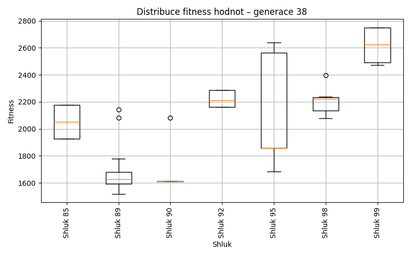
Generace 39
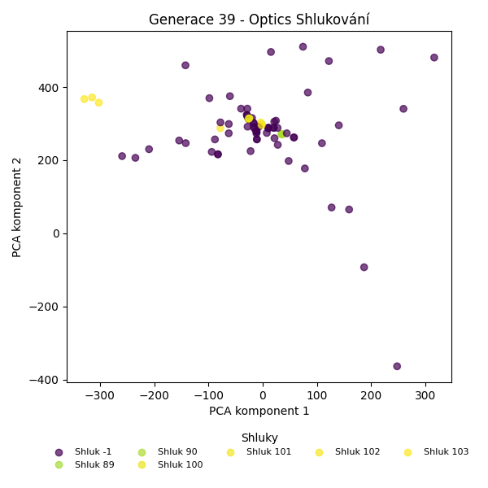
Posun centroidů mezi generací 38 → 39:
- Shluk 0: 18.3449
- Shluk 1: 107.8538
- Shluk 2: 140.6480
- Shluk 3: 135.6843
- Shluk 4: 6.3578
- Shluk 5: 746.3623
Generace 40

Posun centroidů mezi generací 39 → 40:
- Shluk 0: 0.2167
- Shluk 1: 1.5546
- Shluk 2: 8.6951
- Shluk 3: 40.7457
- Shluk 4: 0.0000
- Shluk 5: 803.4985
Generace 41

Posun centroidů mezi generací 40 → 41:
- Shluk 0: 6.0338
- Shluk 1: 16.1254
- Shluk 2: 8.1641
- Shluk 3: 123.8438
- Shluk 4: 752.9389

Generace 42
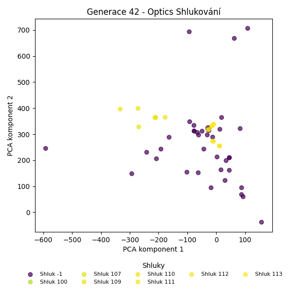
Posun centroidů mezi generací 41 → 42:
- Shluk 0: 542.3919
- Shluk 1: 12.0345
- Shluk 2: 19.9776
- Shluk 3: 145.8582
- Shluk 4: 714.2252

Generace 43

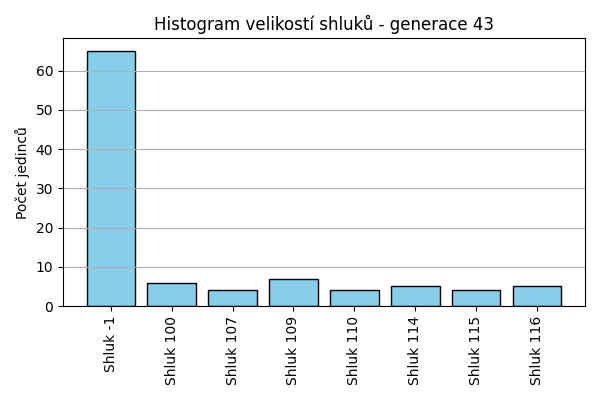
Posun centroidů mezi generací 42 → 43:
- Shluk 0: 75.3672
- Shluk 1: 11.3783
- Shluk 2: 12.7476
- Shluk 3: 4.6146
- Shluk 4: 10.8498
- Shluk 5: 422.9643
- Shluk 6: 628.4541

Generace 44
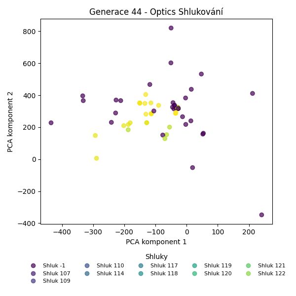
Posun centroidů mezi generací 43 → 44:
- Shluk 0: 203.1317
- Shluk 1: 1.7108
- Shluk 2: 1.5252
- Shluk 3: 5.8394
- Shluk 4: 15.7333
- Shluk 5: 408.2516
- Shluk 6: 622.2465

Generace 45

Posun centroidů mezi generací 44 → 45:
- Shluk 0: 273.2914
- Shluk 1: 1.8872
- Shluk 2: 1.4458
- Shluk 3: 93.1527
- Shluk 4: 182.7634

Generace 46


Posun centroidů mezi generací 45 → 46:
- Shluk 0: 215.4010
- Shluk 1: 0.6621
- Shluk 2: 0.9328
- Shluk 3: 94.6507
- Shluk 4: 113.6140

Generace 47


Posun centroidů mezi generací 46 → 47:
- Shluk 0: 139.8837
- Shluk 1: 85.1753
- Shluk 2: 4.9703
- Shluk 3: 0.9597
- Shluk 4: 39.1315
- Shluk 5: 52.4298
- Shluk 6: 240.4161
- Shluk 7: 693.2432
- Shluk 8: 821.2595

Generace 48
Posun centroidů mezi generací 47 → 48:
- Shluk 0: 59.5623
- Shluk 1: 103.7160
- Shluk 2: 166.1115
- Shluk 3: 35.5825
- Shluk 4: 28.0029
- Shluk 5: 29.3822
- Shluk 6: 0.4623
- Shluk 7: 80.1772
- Shluk 8: 635.7241

Generace 49
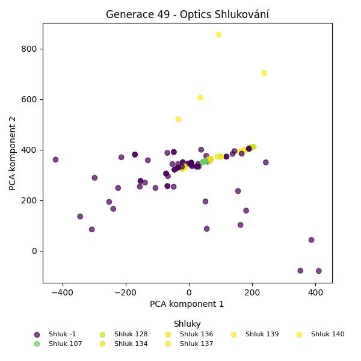
Posun centroidů mezi generací 48 → 49:
- Shluk 0: 54.9659
- Shluk 1: 222.4058
- Shluk 2: 64.0748
- Shluk 3: 140.8501
- Shluk 4: 144.9307
- Shluk 5: 93.3544
- Shluk 6: 716.5916

Generace 50

Posun centroidů mezi generací 49 → 50:
- Shluk 0: 15.5553
- Shluk 1: 89.4785
- Shluk 2: 173.3302
- Shluk 3: 65.8652
- Shluk 4: 29.6069
- Shluk 5: 94.2790
- Shluk 6: 702.0468

Generace 51
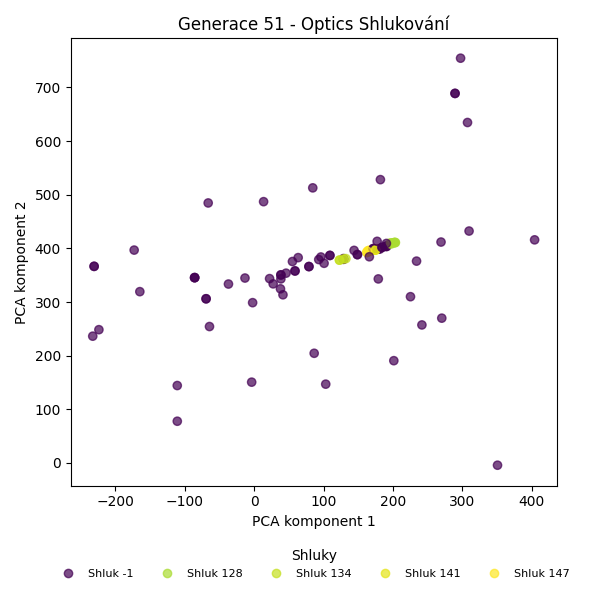
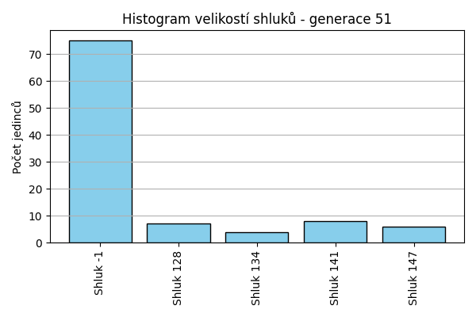
Posun centroidů mezi generací 50 → 51:
- Shluk 0: 21.6882
- Shluk 1: 22.1365
- Shluk 2: 7.0387
- Shluk 3: 36.8552

Generace 52

Posun centroidů mezi generací 51 → 52:
- Shluk 0: 19.5225
- Shluk 1: 28.2218
- Shluk 2: 47.2011
- Shluk 3: 114.8034
Generace 53

Posun centroidů mezi generací 52 → 53:
- Shluk 0: 1.6227
- Shluk 1: 13.9988
- Shluk 2: 10.0058
- Shluk 3: 22.4596
- Shluk 4: 180.1270
- Shluk 5: 235.5987
- Shluk 6: 227.1667
- Shluk 7: 511.1348

Generace 54
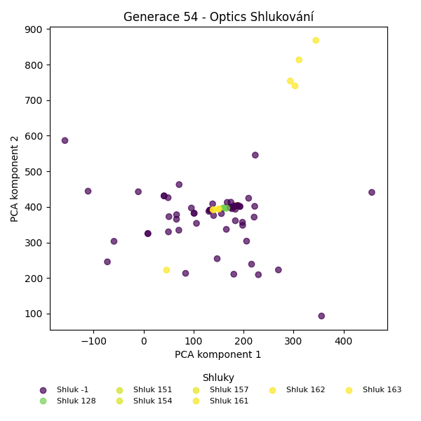

Posun centroidů mezi generací 53 → 54:
- Shluk 0: 3.3775
- Shluk 1: 0.2164
- Shluk 2: 0.0000
- Shluk 3: 0.7904
- Shluk 4: 80.0796
- Shluk 5: 139.1562
- Shluk 6: 617.0539

Generace 55
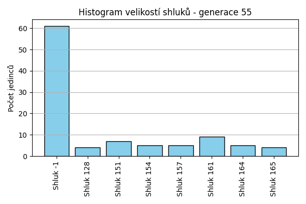
Posun centroidů mezi generací 54 → 55:
- Shluk 0: 195.5978
- Shluk 1: 5.7221
- Shluk 2: 3.6073
- Shluk 3: 3.7274
- Shluk 4: 79.2271
- Shluk 5: 139.1140
- Shluk 6: 257.6611

Generace 56


Posun centroidů mezi generací 55 → 56:
- Shluk 0: 18.8219
- Shluk 1: 6.2958
- Shluk 2: 4.7141
- Shluk 3: 3.7854
- Shluk 4: 9.0230
- Shluk 5: 347.7903
- Shluk 6: 838.2807
Generace 57
Posun centroidů mezi generací 56 → 57:
- Shluk 0: 171.4518
- Shluk 1: 3.0955
- Shluk 2: 6.8125
- Shluk 3: 124.8054
- Shluk 4: 207.3259
- Shluk 5: 477.0284
- Shluk 6: 390.2342

Generace 58
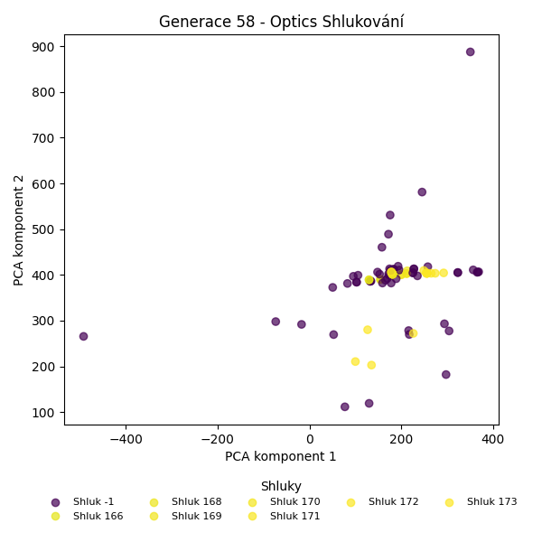
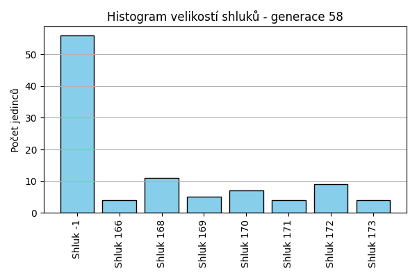
Posun centroidů mezi generací 57 → 58:
- Shluk 0: 0.6859
- Shluk 1: 5.7915
- Shluk 2: 4.6379
- Shluk 3: 58.4067
- Shluk 4: 16.8825
- Shluk 5: 350.9199
- Shluk 6: 786.7445

Generace 59

Posun centroidů mezi generací 58 → 59:
- Shluk 0: 214.2652
- Shluk 1: 9.1643
- Shluk 2: 0.0000
- Shluk 3: 69.3966
- Shluk 4: 232.8305
- Shluk 5: 203.1566
- Shluk 6: 734.8925

Generace 60


Posun centroidů mezi generací 59 → 60:
- Shluk 0: 20.6296
- Shluk 1: 102.7235
- Shluk 2: 4.8489
- Shluk 3: 4.5017
- Shluk 4: 13.8754
- Shluk 5: 244.7672
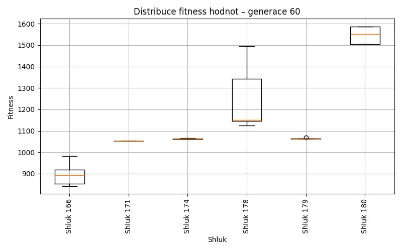
Generace 61
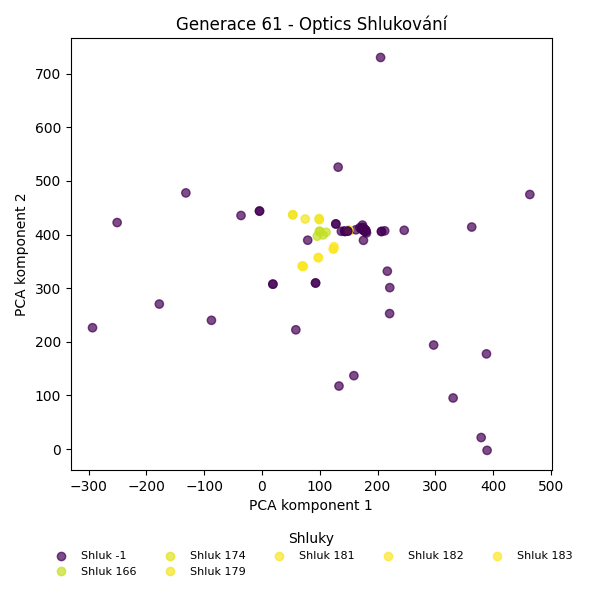

Posun centroidů mezi generací 60 → 61:
- Shluk 0: 0.0000
- Shluk 1: 26.5415
- Shluk 2: 10.5630
- Shluk 3: 3.5219
- Shluk 4: 259.4222
- Shluk 5: 390.3034

Generace 62
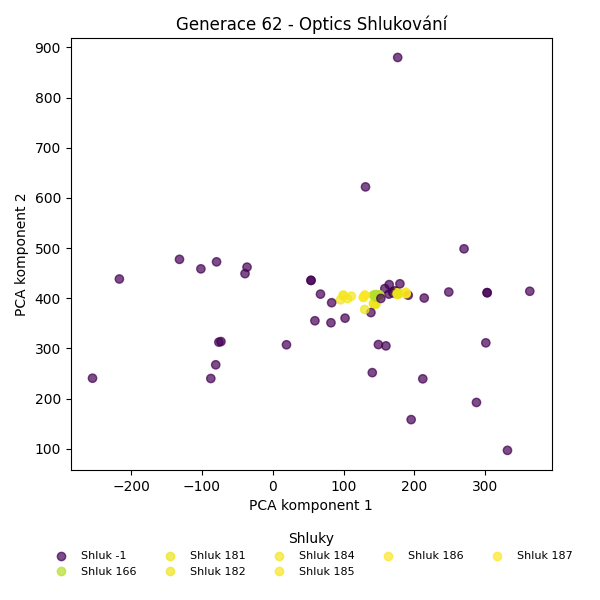

Posun centroidů mezi generací 61 → 62:
- Shluk 0: 0.0000
- Shluk 1: 61.0337
- Shluk 2: 90.5522
- Shluk 3: 3.6672
- Shluk 4: 259.8836
- Shluk 5: 226.0665
Generace 63
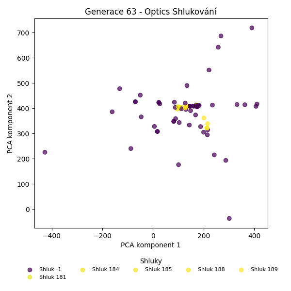
Posun centroidů mezi generací 62 → 63:
- Shluk 0: 1.4543
- Shluk 1: 10.8328
- Shluk 2: 89.8456
- Shluk 3: 6.8603
- Shluk 4: 144.1567

Generace 64

Posun centroidů mezi generací 63 → 64:
- Shluk 0: 0.0000
- Shluk 1: 13.1411
- Shluk 2: 75.3362
- Shluk 3: 3.2765
- Shluk 4: 192.6818

Generace 65

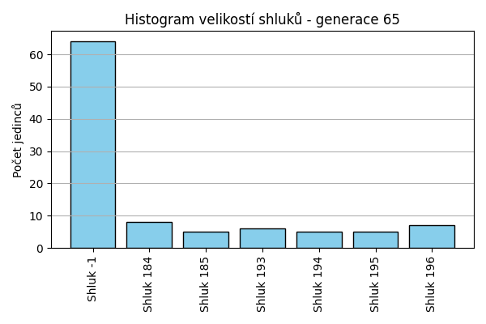
Posun centroidů mezi generací 64 → 65:
- Shluk 0: 0.0000
- Shluk 1: 8.6723
- Shluk 2: 71.9986
- Shluk 3: 86.5983
- Shluk 4: 349.0336
- Shluk 5: 780.5164
Generace 66


Posun centroidů mezi generací 65 → 66:
- Shluk 0: 8.7994
- Shluk 1: 2.0830
- Shluk 2: 72.0493
- Shluk 3: 94.9229
- Shluk 4: 357.1451
- Shluk 5: 749.6263

Generace 67


Posun centroidů mezi generací 66 → 67:
- Shluk 0: 5.0952
- Shluk 1: 7.4431
- Shluk 2: 16.5832
- Shluk 3: 0.9213
- Shluk 4: 230.8875
- Shluk 5: 234.0357
- Shluk 6: 736.7997
Generace 68


Posun centroidů mezi generací 67 → 68:
- Shluk 0: 3.0598
- Shluk 1: 7.5914
- Shluk 2: 6.6872
- Shluk 3: 7.8024
- Shluk 4: 520.6362
- Shluk 5: 749.7148
- Shluk 6: 935.9026
Generace 69


Posun centroidů mezi generací 68 → 69:
- Shluk 0: 2.5986
- Shluk 1: 86.7627
- Shluk 2: 117.9990
- Shluk 3: 217.5117
- Shluk 4: 467.7073
- Shluk 5: 738.4498
- Shluk 6: 593.9669

Generace 70
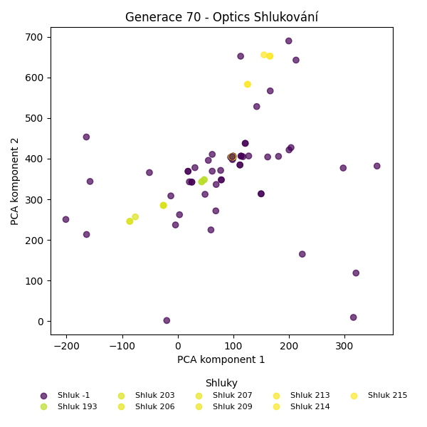

Posun centroidů mezi generací 69 → 70:
- Shluk 0: 3.9831
- Shluk 1: 10.3775
- Shluk 2: 7.2680
- Shluk 3: 7.0811
- Shluk 4: 10.3576
- Shluk 5: 279.4336
- Shluk 6: 641.2928
- Shluk 7: 727.7718
Generace 71

Posun centroidů mezi generací 70 → 71:
- Shluk 0: 3.4928
- Shluk 1: 0.0000
- Shluk 2: 7.0767
- Shluk 3: 88.0333
- Shluk 4: 211.6046
Generace 72

Posun centroidů mezi generací 71 → 72:
- Shluk 0: 13.7307
- Shluk 1: 4.1733
- Shluk 2: 8.5977
- Shluk 3: 84.4601
- Shluk 4: 214.0520

Generace 73
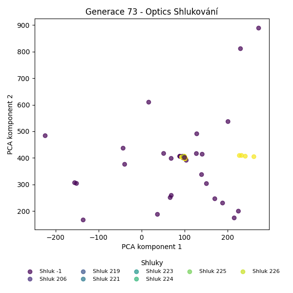

Posun centroidů mezi generací 72 → 73:
- Shluk 0: 17.6169
- Shluk 1: 3.3232
- Shluk 2: 2.1005
- Shluk 3: 4.7771
- Shluk 4: 3.8187
- Shluk 5: 13.1538
- Shluk 6: 450.9135
Generace 74


Posun centroidů mezi generací 73 → 74:
- Shluk 0: 8.1654
- Shluk 1: 11.4047
- Shluk 2: 12.6955
- Shluk 3: 9.5229
- Shluk 4: 5.1287
- Shluk 5: 4.1667
- Shluk 6: 3.1212
- Shluk 7: 3.1608
- Shluk 8: 2.1802
- Shluk 9: 390.5731

Generace 75
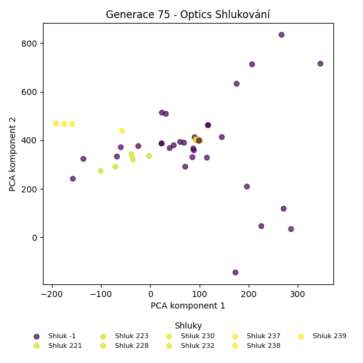

Posun centroidů mezi generací 74 → 75:
- Shluk 0: 0.2004
- Shluk 1: 5.1317
- Shluk 2: 7.4000
- Shluk 3: 7.5890
- Shluk 4: 2.8814
- Shluk 5: 2.8552
- Shluk 6: 406.6000
- Shluk 7: 595.6849

Generace 76


Posun centroidů mezi generací 75 → 76:
- Shluk 0: 96.5359
- Shluk 1: 2.4518
- Shluk 2: 5.2458
- Shluk 3: 0.7132
- Shluk 4: 5.5749
- Shluk 5: 11.1021
- Shluk 6: 135.8793
- Shluk 7: 66.5845
Generace 77

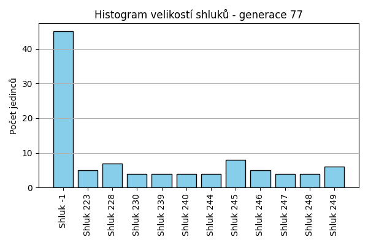
Posun centroidů mezi generací 76 → 77:
- Shluk 0: 48.8782
- Shluk 1: 1.9553
- Shluk 2: 0.9290
- Shluk 3: 1.3334
- Shluk 4: 2.0199
- Shluk 5: 3.9675
- Shluk 6: 273.4993
- Shluk 7: 574.4050
- Shluk 8: 760.7625
Generace 78
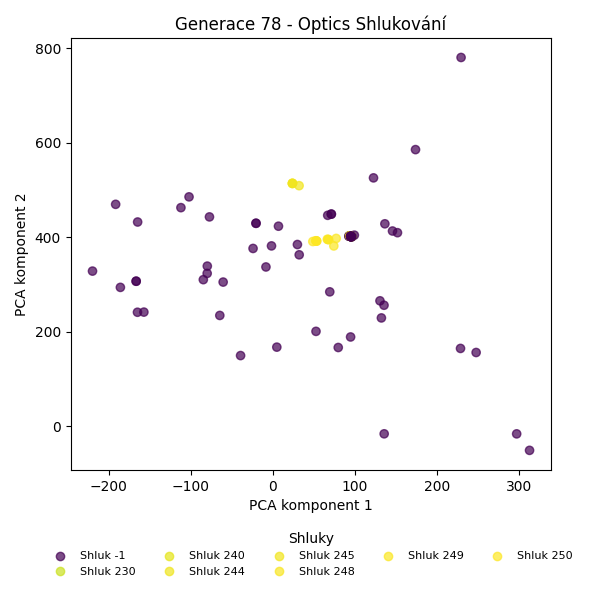

Posun centroidů mezi generací 77 → 78:
- Shluk 0: 96.3851
- Shluk 1: 3.9943
- Shluk 2: 2.1845
- Shluk 3: 1.0973
- Shluk 4: 2.1844
- Shluk 5: 108.8871
- Shluk 6: 178.4795
Generace 79


Posun centroidů mezi generací 78 → 79:
- Shluk 0: 0.0000
- Shluk 1: 159.6798
- Shluk 2: 0.9953
- Shluk 3: 4.4068
- Shluk 4: 3.1987
- Shluk 5: 50.6496
- Shluk 6: 338.3516
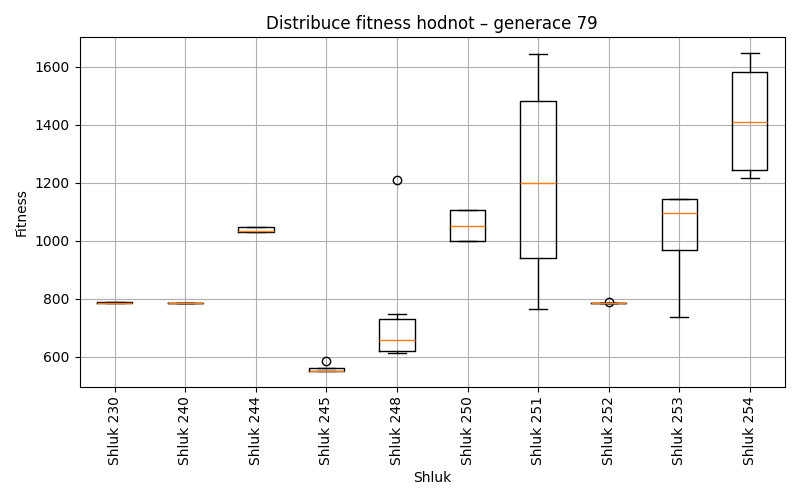
Generace 80
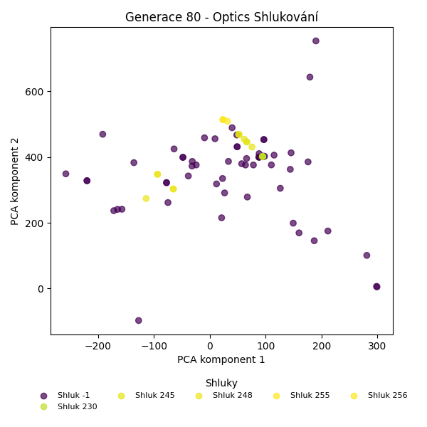

Posun centroidů mezi generací 79 → 80:
- Shluk 0: 0.0000
- Shluk 1: 44.5816
- Shluk 2: 1.1611
- Shluk 3: 1.6657
- Shluk 4: 471.8910

Generace 81


Posun centroidů mezi generací 80 → 81:
- Shluk 0: 0.0000
- Shluk 1: 10.7403
- Shluk 2: 0.5353
- Shluk 3: 285.2772
- Shluk 4: 258.5574
Generace 82

Posun centroidů mezi generací 81 → 82:
- Shluk 0: 8.3911
- Shluk 1: 45.5835
- Shluk 2: 90.8514
- Shluk 3: 285.2469
- Shluk 4: 724.8968
- Shluk 5: 1008.6176

Generace 83

Posun centroidů mezi generací 82 → 83:
- Shluk 0: 14.8908
- Shluk 1: 49.8069
- Shluk 2: 30.3450
- Shluk 3: 4.9352
- Shluk 4: 277.8055
- Shluk 5: 438.0794
- Shluk 6: 235.9757
- Shluk 7: 175.2441
- Shluk 8: 127.0081
Generace 84

Posun centroidů mezi generací 83 → 84:
- Shluk 0: 6.7170
- Shluk 1: 0.0000
- Shluk 2: 447.0374
- Shluk 3: 739.2294
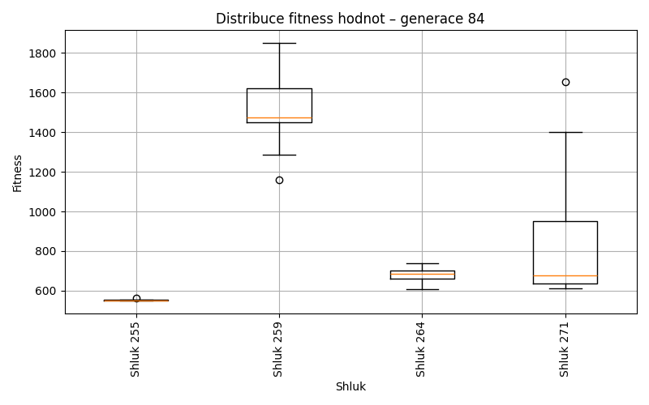
Generace 85
Posun centroidů mezi generací 84 → 85:
- Shluk 0: 6.5251
- Shluk 1: 13.6487
- Shluk 2: 187.5130
- Shluk 3: 158.4302
Generace 86


Posun centroidů mezi generací 85 → 86:
- Shluk 0: 0.8666
- Shluk 1: 6.0271
- Shluk 2: 176.9290
- Shluk 3: 209.2786
Generace 87


Posun centroidů mezi generací 86 → 87:
- Shluk 0: 13.6853
- Shluk 1: 23.0331
- Shluk 2: 456.1264
- Shluk 3: 613.3617

Generace 88


Posun centroidů mezi generací 87 → 88:
- Shluk 0: 0.0870
- Shluk 1: 11.8171
- Shluk 2: 19.4943
- Shluk 3: 134.0803
- Shluk 4: 428.4182
- Shluk 5: 635.2928
Generace 89

Posun centroidů mezi generací 88 → 89:
- Shluk 0: 0.2844
- Shluk 1: 3.3589
- Shluk 2: 8.2865
- Shluk 3: 16.3583
- Shluk 4: 4.4535
- Shluk 5: 113.0519
- Shluk 6: 173.8083
Generace 90


Posun centroidů mezi generací 89 → 90:
- Shluk 0: 105.1790
- Shluk 1: 1.1549
- Shluk 2: 2.0396
- Shluk 3: 2.8068
- Shluk 4: 5.2747
- Shluk 5: 7.3795
- Shluk 6: 13.4614

Generace 91

Posun centroidů mezi generací 90 → 91:
- Shluk 0: 10.2465
- Shluk 1: 0.0217
- Shluk 2: 0.5695
- Shluk 3: 0.8238
- Shluk 4: 3.9147
- Shluk 5: 167.2337
Generace 92


Posun centroidů mezi generací 91 → 92:
- Shluk 0: 87.8698
- Shluk 1: 76.1158
- Shluk 2: 3.2761
- Shluk 3: 2.6426
- Shluk 4: 0.3856
- Shluk 5: 167.3424
Generace 93

Posun centroidů mezi generací 92 → 93:
- Shluk 0: 0.0000
- Shluk 1: 12.9127
- Shluk 2: 1.2856
- Shluk 3: 1.3691
- Shluk 4: 1.2793
- Shluk 5: 4.4679
- Shluk 6: 3.7436
- Shluk 7: 377.3634
Generace 94

Posun centroidů mezi generací 93 → 94:
- Shluk 0: 0.0000
- Shluk 1: 16.2444
- Shluk 2: 2.3044
- Shluk 3: 0.7432
- Shluk 4: 194.4705
- Shluk 5: 526.0154

Generace 95

Posun centroidů mezi generací 94 → 95:
- Shluk 0: 0.0000
- Shluk 1: 19.2537
- Shluk 2: 73.7852
- Shluk 3: 1.9651
- Shluk 4: 194.4795
- Shluk 5: 525.9778

Generace 96
Posun centroidů mezi generací 95 → 96:
- Shluk 0: 4.6936
- Shluk 1: 47.5032
- Shluk 2: 73.8171
- Shluk 3: 2.5067
- Shluk 4: 0.7800
- Shluk 5: 12.4510
- Shluk 6: 6.2849
Generace 97
Posun centroidů mezi generací 96 → 97:
- Shluk 0: 30.9167
- Shluk 1: 76.7220
- Shluk 2: 13.8182
- Shluk 3: 20.1445
- Shluk 4: 2.7751
- Shluk 5: 13.9416
- Shluk 6: 13.8672

Generace 98

Posun centroidů mezi generací 97 → 98:
- Shluk 0: 28.5852
- Shluk 1: 119.2577
- Shluk 2: 88.9235
- Shluk 3: 74.7432
- Shluk 4: 8.3806
- Shluk 5: 16.1610
- Shluk 6: 17.6749
- Shluk 7: 626.4202
Generace 99


Posun centroidů mezi generací 98 → 99:
- Shluk 0: 6.0246
- Shluk 1: 66.8931
- Shluk 2: 36.6631
- Shluk 3: 10.4437
- Shluk 4: 32.7323
- Shluk 5: 0.1863
- Shluk 6: 2.1169
- Shluk 7: 653.7147
Generace 100

Posun centroidů mezi generací 99 → 100:
- Shluk 0: 5.3722
- Shluk 1: 19.5099
- Shluk 2: 61.6540
- Shluk 3: 38.0270
- Shluk 4: 51.2003
- Shluk 5: 80.8179
- Shluk 6: 76.4062
- Shluk 7: 260.6348

Generace 101

Posun centroidů mezi generací 100 → 101:
- Shluk 0: 1.1500
- Shluk 1: 7.2645
- Shluk 2: 21.5203
- Shluk 3: 7.8856
- Shluk 4: 149.6590
- Shluk 5: 320.5505

Generace 102

Posun centroidů mezi generací 101 → 102:
- Shluk 0: 0.1966
- Shluk 1: 1.0793
- Shluk 2: 4.1950
- Shluk 3: 85.4009
- Shluk 4: 140.3164
- Shluk 5: 446.7979

Generace 103

Posun centroidů mezi generací 102 → 103:
- Shluk 0: 0.0000
- Shluk 1: 0.5235
- Shluk 2: 1.1738
- Shluk 3: 0.6065
- Shluk 4: 6.5054
- Shluk 5: 149.1012
Generace 104


Posun centroidů mezi generací 103 → 104:
- Shluk 0: 0.1403
- Shluk 1: 3.1246
- Shluk 2: 421.0689

Generace 105
Posun centroidů mezi generací 104 → 105:
- Shluk 0: 0.6543
- Shluk 1: 1.4155
- Shluk 2: 421.1610
Generace 106

Posun centroidů mezi generací 105 → 106:
- Shluk 0: 8.9423
- Shluk 1: 4.5388
- Shluk 2: 0.1404
- Shluk 3: 25.6058
- Shluk 4: 511.9082

Generace 107

Posun centroidů mezi generací 106 → 107:
- Shluk 0: 9.4376
- Shluk 1: 4.7012
- Shluk 2: 5.2167
- Shluk 3: 1.2787
- Shluk 4: 499.3167
Generace 108

Posun centroidů mezi generací 107 → 108:
- Shluk 0: 0.4319
- Shluk 1: 3.4981
- Shluk 2: 10.6420
- Shluk 3: 15.9252

Generace 109

Posun centroidů mezi generací 108 → 109:
- Shluk 0: 379.7744
- Shluk 1: 4.9446
- Shluk 2: 2.7400
- Shluk 3: 11.8400

Generace 110
Posun centroidů mezi generací 109 → 110:
- Shluk 0: 379.7788
- Shluk 1: 0.3872
- Shluk 2: 2.8458
- Shluk 3: 1.7740
- Shluk 4: 2.8428
- Shluk 5: 381.1825
- Shluk 6: 702.8191

Generace 111

Posun centroidů mezi generací 110 → 111:
- Shluk 0: 1.6844
- Shluk 1: 2.3933
- Shluk 2: 680.1480
- Shluk 3: 690.0724

Generace 112


Posun centroidů mezi generací 111 → 112:
- Shluk 0: 1.2114
- Shluk 1: 3.3556
- Shluk 2: 680.4648
- Shluk 3: 797.2027
Generace 113

Posun centroidů mezi generací 112 → 113:
- Shluk 0: 736.1303
- Shluk 1: 5.1839
- Shluk 2: 1.4229
- Shluk 3: 399.2393
- Shluk 4: 733.5566

Generace 114

Posun centroidů mezi generací 113 → 114:
- Shluk 0: 17.0322
- Shluk 1: 1.5392
- Shluk 2: 2.5391
- Shluk 3: 1.4339
- Shluk 4: 1.9378
- Shluk 5: 2.4791
- Shluk 6: 349.5954
- Shluk 7: 380.5322
Generace 115

Posun centroidů mezi generací 114 → 115:
- Shluk 0: 7.7510
- Shluk 1: 0.0532
- Shluk 2: 0.0000
- Shluk 3: 0.7429
- Shluk 4: 1.6870
- Shluk 5: 304.5830
- Shluk 6: 418.2929
- Shluk 7: 39.9036

Generace 116

Posun centroidů mezi generací 115 → 116:
- Shluk 0: 8.3677
- Shluk 1: 470.1722
- Shluk 2: 288.4687
- Shluk 3: 259.0648
- Shluk 4: 1.4172
- Shluk 5: 304.8486
Generace 117


Posun centroidů mezi generací 116 → 117:
- Shluk 0: 3.3842
- Shluk 1: 36.4938
- Shluk 2: 14.3382
- Shluk 3: 258.9126
- Shluk 4: 0.2355
- Shluk 5: 1.2352

Generace 118

Posun centroidů mezi generací 117 → 118:
- Shluk 0: 0.5049
- Shluk 1: 2.9469
- Shluk 2: 14.8422
- Shluk 3: 287.5627
- Shluk 4: 0.3081
- Shluk 5: 398.4141
- Shluk 6: 789.4262
Generace 119

Posun centroidů mezi generací 118 → 119:
- Shluk 0: 3.9383
- Shluk 1: 287.7632
- Shluk 2: 264.0745
- Shluk 3: 154.4675
- Shluk 4: 294.6612
- Shluk 5: 398.7006
Generace 120


Posun centroidů mezi generací 119 → 120:
- Shluk 0: 0.0000
- Shluk 1: 0.3869
- Shluk 2: 165.6725
- Shluk 3: 193.3766
- Shluk 4: 256.1124
- Shluk 5: 437.4914

Generace 121
Posun centroidů mezi generací 120 → 121:
- Shluk 0: 5.1820
- Shluk 1: 5.6318
- Shluk 2: 3.9383
- Shluk 3: 85.8019
- Shluk 4: 170.7798
- Shluk 5: 281.5857
Generace 122

Posun centroidů mezi generací 121 → 122:
- Shluk 0: 0.0000
- Shluk 1: 0.8556
- Shluk 2: 2.0728
- Shluk 3: 2.7388
- Shluk 4: 3.2565
- Shluk 5: 4.6899
- Shluk 6: 117.4073
- Shluk 7: 131.5421
- Shluk 8: 488.5457

Generace 123

Posun centroidů mezi generací 122 → 123:
- Shluk 0: 0.0000
- Shluk 1: 0.3805
- Shluk 2: 0.4379
- Shluk 3: 0.8153
- Shluk 4: 0.4163
- Shluk 5: 0.4293

Generace 124

Posun centroidů mezi generací 123 → 124:
- Shluk 0: 1.1649
- Shluk 1: 0.1136
- Shluk 2: 0.7960
- Shluk 3: 0.9680
- Shluk 4: 1.7074
- Shluk 5: 2.1090
Generace 125


Posun centroidů mezi generací 124 → 125:
- Shluk 0: 0.4317
- Shluk 1: 0.6394
- Shluk 2: 0.3493
- Shluk 3: 0.5440
- Shluk 4: 0.6002
- Shluk 5: 0.7709
- Shluk 6: 3.5525
- Shluk 7: 618.6376
Generace 126

Posun centroidů mezi generací 125 → 126:
- Shluk 0: 0.1384
- Shluk 1: 0.3663
- Shluk 2: 0.8227
- Shluk 3: 1.1564
- Shluk 4: 0.6884
- Shluk 5: 0.7293
- Shluk 6: 1.4388

Generace 127

Posun centroidů mezi generací 126 → 127:
- Shluk 0: 4.2107
- Shluk 1: 1.6056
- Shluk 2: 0.0049
- Shluk 3: 0.2985
- Shluk 4: 0.4142
- Shluk 5: 0.3152
- Shluk 6: 1.1079

Generace 128

Posun centroidů mezi generací 127 → 128:
- Shluk 0: 0.6641
- Shluk 1: 1.6326
- Shluk 2: 2.6767
- Shluk 3: 2.0104
- Shluk 4: 1.3383
- Shluk 5: 0.7597
- Shluk 6: 0.1915

Generace 129

Posun centroidů mezi generací 128 → 129:
- Shluk 0: 0.1122
- Shluk 1: 0.4788
- Shluk 2: 0.4301
- Shluk 3: 0.8514
- Shluk 4: 1.1797
- Shluk 5: 0.8962
- Shluk 6: 1.0102
Generace 130


Posun centroidů mezi generací 129 → 130:
- Shluk 0: 0.0317
- Shluk 1: 0.4452
- Shluk 2: 1.0781
- Shluk 3: 1.2078
- Shluk 4: 1.3472
- Shluk 5: 2.0089
- Shluk 6: 2.5208
- Shluk 7: 4.1642
- Shluk 8: 482.2921
- Shluk 9: 623.4965

Generace 131

Posun centroidů mezi generací 130 → 131:
- Shluk 0: 0.7346
- Shluk 1: 0.8625
- Shluk 2: 0.6254
- Shluk 3: 0.4607
- Shluk 4: 0.2927
- Shluk 5: 0.2109
- Shluk 6: 532.8422
Generace 132
Posun centroidů mezi generací 131 → 132:
- Shluk 0: 1.0931
- Shluk 1: 0.3044
- Shluk 2: 0.4456
- Shluk 3: 0.5674
- Shluk 4: 1.0586
- Shluk 5: 1.6813
Generace 133
Posun centroidů mezi generací 132 → 133:
- Shluk 0: 737.7503
- Shluk 1: 444.0885
- Shluk 2: 0.8524
- Shluk 3: 0.4843
- Shluk 4: 0.4372
- Shluk 5: 0.5244

Generace 134

Posun centroidů mezi generací 133 → 134:
- Shluk 0: 16.7905
- Shluk 1: 0.5985
- Shluk 2: 303.3409
- Shluk 3: 0.2633
- Shluk 4: 0.4035
- Shluk 5: 0.3468
- Shluk 6: 1.6778
Generace 135

Posun centroidů mezi generací 134 → 135:
- Shluk 0: 34.8471
- Shluk 1: 309.9492
- Shluk 2: 143.8312
- Shluk 3: 298.7845
- Shluk 4: 0.9343
- Shluk 5: 0.4282
- Shluk 6: 1.7369

Generace 136


Posun centroidů mezi generací 135 → 136:
- Shluk 0: 18.5968
- Shluk 1: 0.0000
- Shluk 2: 447.1862
- Shluk 3: 298.7024
- Shluk 4: 277.6988
- Shluk 5: 125.3618
- Shluk 6: 420.2219

Generace 137

Posun centroidů mezi generací 136 → 137:
- Shluk 0: 1.1822
- Shluk 1: 7.6682
- Shluk 2: 754.5526
- Shluk 3: 452.6422
- Shluk 4: 14.8159
- Shluk 5: 51.9326
- Shluk 6: 420.0546
Generace 138

Posun centroidů mezi generací 137 → 138:
- Shluk 0: 6.9032
- Shluk 1: 9.9464
- Shluk 2: 14.7724
- Shluk 3: 287.8476
- Shluk 4: 453.0614
- Shluk 5: 453.7467
- Shluk 6: 546.9352
Generace 139


Posun centroidů mezi generací 138 → 139:
- Shluk 0: 0.6821
- Shluk 1: 2.8715
- Shluk 2: 2.6887
- Shluk 3: 1.7642
- Shluk 4: 5.5526
- Shluk 5: 112.5684
- Shluk 6: 20.1838
- Shluk 7: 53.6916
- Shluk 8: 584.6521
Generace 140

Posun centroidů mezi generací 139 → 140:
- Shluk 0: 3.7777
- Shluk 1: 2.8292
- Shluk 2: 4.8309
- Shluk 3: 4.8089
- Shluk 4: 3.5151
- Shluk 5: 6.2063
- Shluk 6: 97.6652
- Shluk 7: 204.4736
- Shluk 8: 478.4521

Generace 141

Posun centroidů mezi generací 140 → 141:
- Shluk 0: 0.1062
- Shluk 1: 1.6954
- Shluk 2: 0.7381
- Shluk 3: 1.6765
- Shluk 4: 3.3174
- Shluk 5: 2.2896
- Shluk 6: 25.8427
- Shluk 7: 197.3294
Generace 142
Posun centroidů mezi generací 141 → 142:
- Shluk 0: 2.5792
- Shluk 1: 1.2751
- Shluk 2: 4.5326
- Shluk 3: 2.9811
- Shluk 4: 1.4252
- Shluk 5: 5.1418
- Shluk 6: 41.0141
- Shluk 7: 150.8853

Generace 143

Posun centroidů mezi generací 142 → 143:
- Shluk 0: 1.5961
- Shluk 1: 1.4644
- Shluk 2: 2.2141
- Shluk 3: 2.3452
- Shluk 4: 3.4945
- Shluk 5: 3.0697
Generace 144
Posun centroidů mezi generací 143 → 144:
- Shluk 0: 2.9515
- Shluk 1: 1.5430
- Shluk 2: 0.1726
- Shluk 3: 4.1807
- Shluk 4: 2.6044
- Shluk 5: 0.1834
Generace 145
Posun centroidů mezi generací 144 → 145:
- Shluk 0: 0.9911
- Shluk 1: 3.0662
- Shluk 2: 1.6584
- Shluk 3: 1.1312
- Shluk 4: 4.5519
- Shluk 5: 6.3315
- Shluk 6: 442.6368
Generace 146

Posun centroidů mezi generací 145 → 146:
- Shluk 0: 0.3278
- Shluk 1: 1.5022
- Shluk 2: 1.0460
- Shluk 3: 2.3616
- Shluk 4: 0.0774
- Shluk 5: 1.7927
- Shluk 6: 2.3401
- Shluk 7: 633.5461
- Shluk 8: 511.7598
- Shluk 9: 909.8880
Generace 147

Posun centroidů mezi generací 146 → 147:
- Shluk 0: 2.5282
- Shluk 1: 0.4269
- Shluk 2: 0.5210
- Shluk 3: 1.1119
- Shluk 4: 1.2992
- Shluk 5: 3.6166
- Shluk 6: 1.7230
- Shluk 7: 633.5299

Generace 148


Posun centroidů mezi generací 147 → 148:
- Shluk 0: 0.7915
- Shluk 1: 0.5396
- Shluk 2: 0.2622
- Shluk 3: 0.2080
- Shluk 4: 1.0702
- Shluk 5: 1.9824
- Shluk 6: 2.7272
- Shluk 7: 3.1727

Generace 149


Posun centroidů mezi generací 148 → 149:
- Shluk 0: 0.1352
- Shluk 1: 0.6264
- Shluk 2: 0.0526
- Shluk 3: 0.1905
- Shluk 4: 0.3825
- Shluk 5: 1.5489
- Shluk 6: 18.4639
- Shluk 7: 837.6082
Generace 150

Posun centroidů mezi generací 149 → 150:
- Shluk 0: 3.9471
- Shluk 1: 0.3334
- Shluk 2: 0.2976
- Shluk 3: 0.6920
- Shluk 4: 0.4299
Generace 151
Posun centroidů mezi generací 150 → 151:
- Shluk 0: 0.4838
- Shluk 1: 2.1157
- Shluk 2: 0.3636
- Shluk 3: 0.0983
- Shluk 4: 1.4160

Generace 152

Posun centroidů mezi generací 151 → 152:
- Shluk 0: 0.0992
- Shluk 1: 0.0620
- Shluk 2: 2.0408
- Shluk 3: 1.3647
- Shluk 4: 1.0774
- Shluk 5: 333.7166
- Shluk 6: 628.1609

Generace 153

Posun centroidů mezi generací 152 → 153:
- Shluk 0: 0.1957
- Shluk 1: 0.4520
- Shluk 2: 0.7815
- Shluk 3: 111.2966

Generace 154
Posun centroidů mezi generací 153 → 154:
- Shluk 0: 12.3958
- Shluk 1: 0.6834
- Shluk 2: 1.7410
- Shluk 3: 113.4141

Generace 155

Posun centroidů mezi generací 154 → 155:
- Shluk 0: 6.2520
- Shluk 1: 0.5902
- Shluk 2: 0.4085
- Shluk 3: 0.8709
- Shluk 4: 1.9484
- Shluk 5: 393.5733

Generace 156

Posun centroidů mezi generací 155 → 156:
- Shluk 0: 4.4944
- Shluk 1: 6.2795
- Shluk 2: 3.9522
- Shluk 3: 2.6536
- Shluk 4: 0.9628
- Shluk 5: 393.5494

Generace 157

Posun centroidů mezi generací 156 → 157:
- Shluk 0: 1.6391
- Shluk 1: 1.4255
- Shluk 2: 2.4348
- Shluk 3: 8.0818
- Shluk 4: 4.2541
- Shluk 5: 12.9563
- Shluk 6: 504.7382
Generace 158


Posun centroidů mezi generací 157 → 158:
- Shluk 0: 0.9557
- Shluk 1: 0.3243
- Shluk 2: 0.8350
- Shluk 3: 4.5341
- Shluk 4: 1.3487
- Shluk 5: 14.3449
- Shluk 6: 385.7441
- Shluk 7: 658.0871
- Shluk 8: 474.2109
Generace 159


Posun centroidů mezi generací 158 → 159:
- Shluk 0: 1.4734
- Shluk 1: 0.6264
- Shluk 2: 1.5511
- Shluk 3: 2.8122
- Shluk 4: 3.3410
- Shluk 5: 0.6400
- Shluk 6: 1.5844
- Shluk 7: 822.4127
- Shluk 8: 593.8233

Generace 160

Posun centroidů mezi generací 159 → 160:
- Shluk 0: 1.5762
- Shluk 1: 0.6408
- Shluk 2: 0.5354
- Shluk 3: 0.3718
- Shluk 4: 0.2258
- Shluk 5: 0.6400
- Shluk 6: 1.3295
- Shluk 7: 821.8683
- Shluk 8: 594.1209
Generace 161


Posun centroidů mezi generací 160 → 161:
- Shluk 0: 0.8783
- Shluk 1: 0.7442
- Shluk 2: 0.0854
- Shluk 3: 0.2130
- Shluk 4: 0.2908
- Shluk 5: 0.3462
- Shluk 6: 0.4412
- Shluk 7: 0.2984
- Shluk 8: 247.0933
Generace 162

Posun centroidů mezi generací 161 → 162:
- Shluk 0: 0.4815
- Shluk 1: 0.2230
- Shluk 2: 0.4036
- Shluk 3: 0.0378
- Shluk 4: 0.1822
- Shluk 5: 283.3330
Generace 163

Posun centroidů mezi generací 162 → 163:
- Shluk 0: 3.0339
- Shluk 1: 0.6181
- Shluk 2: 0.4665
- Shluk 3: 0.0762
Generace 164


Posun centroidů mezi generací 163 → 164:
- Shluk 0: 0.6309
- Shluk 1: 2.0317
- Shluk 2: 1.3730
- Shluk 3: 0.6896
Generace 165

Posun centroidů mezi generací 164 → 165:
- Shluk 0: 0.1206
- Shluk 1: 1.3109
- Shluk 2: 1.4150
- Shluk 3: 1.9724
- Shluk 4: 1.3223

Generace 166


Posun centroidů mezi generací 165 → 166:
- Shluk 0: 0.4067
- Shluk 1: 0.4753
- Shluk 2: 0.5778
- Shluk 3: 0.9153
- Shluk 4: 1.4482
- Shluk 5: 1.2167
- Shluk 6: 1.3759
- Shluk 7: 1.1936
- Shluk 8: 712.8889
Generace 167

Posun centroidů mezi generací 166 → 167:
- Shluk 0: 0.3347
- Shluk 1: 0.3918
- Shluk 2: 0.5234
- Shluk 3: 0.3785
- Shluk 4: 0.1431
- Shluk 5: 0.1901
- Shluk 6: 0.2481
- Shluk 7: 707.3260
Generace 168

Posun centroidů mezi generací 167 → 168:
- Shluk 0: 0.1772
- Shluk 1: 0.0231
- Shluk 2: 0.1646
- Shluk 3: 0.5639
Generace 169

Posun centroidů mezi generací 168 → 169:
- Shluk 0: 0.3632
- Shluk 1: 0.2696
- Shluk 2: 0.3180
- Shluk 3: 0.4293
Generace 170

Posun centroidů mezi generací 169 → 170:
- Shluk 0: 0.2545
- Shluk 1: 0.2416
- Shluk 2: 0.2807
- Shluk 3: 0.2914
- Shluk 4: 0.3080
- Shluk 5: 816.7157
- Shluk 6: 792.4229

Generace 171
Posun centroidů mezi generací 170 → 171:
- Shluk 0: 4.3746
- Shluk 1: 0.0779
- Shluk 2: 0.0796
- Shluk 3: 0.1768
- Shluk 4: 0.3101
- Shluk 5: 515.5270
- Shluk 6: 264.9804
Generace 172

Posun centroidů mezi generací 171 → 172:
- Shluk 0: 0.5157
- Shluk 1: 2.4061
- Shluk 2: 1.5360
- Shluk 3: 0.0646
- Shluk 4: 0.0054
- Shluk 5: 0.1664
- Shluk 6: 750.4331

Generace 173
Posun centroidů mezi generací 172 → 173:
- Shluk 0: 0.0940
- Shluk 1: 0.0911
- Shluk 2: 0.7678
- Shluk 3: 1.5355
- Shluk 4: 1.5362
- Shluk 5: 0.9263
- Shluk 6: 0.0072
- Shluk 7: 0.1529

Generace 174

Posun centroidů mezi generací 173 → 174:
- Shluk 0: 0.0593
- Shluk 1: 0.7955
- Shluk 2: 0.7073
- Shluk 3: 1.3835
- Shluk 4: 0.9053
- Shluk 5: 1.1739
- Shluk 6: 2.0225
- Shluk 7: 1.1332

Generace 175
Posun centroidů mezi generací 174 → 175:
- Shluk 0: 0.5491
- Shluk 1: 0.0127
- Shluk 2: 0.1632
- Shluk 3: 0.1010
- Shluk 4: 0.3943
- Shluk 5: 0.5656
- Shluk 6: 0.4854
- Shluk 7: 2.7123

Generace 176
Posun centroidů mezi generací 175 → 176:
- Shluk 0: 0.4702
- Shluk 1: 0.2590
- Shluk 2: 0.1216
- Shluk 3: 0.3325
- Shluk 4: 0.6439

Generace 177

Posun centroidů mezi generací 176 → 177:
- Shluk 0: 0.0022
- Shluk 1: 0.2161
- Shluk 2: 0.0701
- Shluk 3: 0.0000
- Shluk 4: 0.0881
Generace 178


Posun centroidů mezi generací 177 → 178:
- Shluk 0: 0.0037
- Shluk 1: 0.1029
- Shluk 2: 0.1523
- Shluk 3: 0.0932
- Shluk 4: 0.0867
- Shluk 5: 0.0508

Generace 179
Posun centroidů mezi generací 178 → 179:
- Shluk 0: 0.0769
- Shluk 1: 0.1460
- Shluk 2: 0.1820
- Shluk 3: 0.2220
- Shluk 4: 0.1886
- Shluk 5: 0.2010
Generace 180

Posun centroidů mezi generací 179 → 180:
- Shluk 0: 0.0746
- Shluk 1: 0.0544
- Shluk 2: 0.0276
Generace 181


Posun centroidů mezi generací 180 → 181:
- Shluk 0: 0.0933
- Shluk 1: 0.1027
- Shluk 2: 0.0907
Generace 182


Posun centroidů mezi generací 181 → 182:
- Shluk 0: 0.2354
- Shluk 1: 0.2108
- Shluk 2: 0.0780
- Shluk 3: 564.4090
- Shluk 4: 641.8193
Generace 183


Posun centroidů mezi generací 182 → 183:
- Shluk 0: 0.0774
- Shluk 1: 0.0561
- Shluk 2: 0.1670
- Shluk 3: 564.4011
- Shluk 4: 504.1947

Generace 184


Posun centroidů mezi generací 183 → 184:
- Shluk 0: 0.0144
- Shluk 1: 0.0715
- Shluk 2: 0.1015
- Shluk 3: 0.1388
- Shluk 4: 0.2025
- Shluk 5: 28.6194
Generace 185


Posun centroidů mezi generací 184 → 185:
- Shluk 0: 0.0932
- Shluk 1: 0.0339
- Shluk 2: 0.0528
- Shluk 3: 0.0687
- Shluk 4: 0.0674
- Shluk 5: 0.0747
- Shluk 6: 0.0636

Generace 186
Posun centroidů mezi generací 185 → 186:
- Shluk 0: 0.0379
- Shluk 1: 0.0993
- Shluk 2: 0.0774
- Shluk 3: 0.0606
- Shluk 4: 0.0451
- Shluk 5: 0.0283
Generace 187
Posun centroidů mezi generací 186 → 187:
- Shluk 0: 0.0000
- Shluk 1: 0.0005
- Shluk 2: 0.0051
- Shluk 3: 0.0345
- Shluk 4: 0.0508
- Shluk 5: 0.0596

Generace 188

Posun centroidů mezi generací 187 → 188:
- Shluk 0: 0.5384
- Shluk 1: 0.0011
- Shluk 2: 0.0178
- Shluk 3: 0.0483
- Shluk 4: 0.0807
- Shluk 5: 0.0345
Generace 189
Posun centroidů mezi generací 188 → 189:
- Shluk 0: 0.3178
- Shluk 1: 0.0103
- Shluk 2: 0.0253
- Shluk 3: 0.0131
- Shluk 4: 0.0185
- Shluk 5: 0.1022
Generace 190
Posun centroidů mezi generací 189 → 190:
- Shluk 0: 0.5179
- Shluk 1: 0.4612
- Shluk 2: 0.2979
- Shluk 3: 0.1851
- Shluk 4: 0.1142
- Shluk 5: 0.0804
- Shluk 6: 319.2627

Generace 191

Posun centroidů mezi generací 190 → 191:
- Shluk 0: 0.5029
- Shluk 1: 0.2717
- Shluk 2: 0.2483
- Shluk 3: 0.2765
- Shluk 4: 0.1850
- Shluk 5: 0.1610
- Shluk 6: 0.0661
Generace 192

Posun centroidů mezi generací 191 → 192:
- Shluk 0: 0.0000
- Shluk 1: 0.2308
- Shluk 2: 0.3212
- Shluk 3: 0.2895
- Shluk 4: 0.4019
- Shluk 5: 0.2509
- Shluk 6: 0.3365
Generace 193

Posun centroidů mezi generací 192 → 193:
- Shluk 0: 0.1459
- Shluk 1: 0.1690
- Shluk 2: 0.1200
- Shluk 3: 0.1745
- Shluk 4: 0.1808
- Shluk 5: 0.3679
- Shluk 6: 0.3388
- Shluk 7: 0.2257
- Shluk 8: 87.0433

Generace 194

Posun centroidů mezi generací 193 → 194:
- Shluk 0: 0.0494
- Shluk 1: 0.2055
- Shluk 2: 0.2418
- Shluk 3: 0.1953
- Shluk 4: 0.2028
- Shluk 5: 0.1590
- Shluk 6: 0.1627
- Shluk 7: 218.2015
- Shluk 8: 211.5143
Generace 195

Posun centroidů mezi generací 194 → 195:
- Shluk 0: 0.0163
- Shluk 1: 0.0342
- Shluk 2: 0.1074
- Shluk 3: 0.1287
- Shluk 4: 0.1339
- Shluk 5: 0.1679
- Shluk 6: 0.2453
- Shluk 7: 218.7240
- Shluk 8: 211.5138
Generace 196


Posun centroidů mezi generací 195 → 196:
- Shluk 0: 0.2800
- Shluk 1: 0.2462
- Shluk 2: 0.1162
- Shluk 3: 0.1571
- Shluk 4: 0.1635
- Shluk 5: 0.1890
- Shluk 6: 0.1864
- Shluk 7: 0.2130
- Shluk 8: 0.2135
- Shluk 9: 851.4106

Generace 197

Posun centroidů mezi generací 196 → 197:
- Shluk 0: 0.0030
- Shluk 1: 0.1117
- Shluk 2: 0.1507
- Shluk 3: 0.1464
- Shluk 4: 0.1552
- Shluk 5: 0.1621
- Shluk 6: 0.1814
- Shluk 7: 0.1294
- Shluk 8: 0.1302

Generace 198
Posun centroidů mezi generací 197 → 198:
- Shluk 0: 0.0059
- Shluk 1: 0.0501
- Shluk 2: 0.0320
- Shluk 3: 713.9424

Generace 199


Posun centroidů mezi generací 198 → 199:
- Shluk 0: 0.1924
- Shluk 1: 0.1702
- Shluk 2: 0.2279
- Shluk 3: 713.9424

Generace 200


Posun centroidů mezi generací 199 → 200:
- Shluk 0: 0.0000
- Shluk 1: 0.0250
- Shluk 2: 0.0476
- Shluk 3: 0.0649
- Shluk 4: 0.0674
- Shluk 5: 0.0431
- Shluk 6: 0.0646

Generace 201


Posun centroidů mezi generací 200 → 201:
- Shluk 0: 2.2406
- Shluk 1: 0.0544
- Shluk 2: 0.0436
- Shluk 3: 0.0087
- Shluk 4: 0.0431
- Shluk 5: 0.0880
- Shluk 6: 0.1493
- Shluk 7: 720.5232

Generace 202
Posun centroidů mezi generací 201 → 202:
- Shluk 0: 0.0140
- Shluk 1: 1.3424
- Shluk 2: 0.8960
- Shluk 3: 0.0225
- Shluk 4: 0.0237
- Shluk 5: 0.0149
- Shluk 6: 0.0115
- Shluk 7: 0.0253

Generace 203

Posun centroidů mezi generací 202 → 203:
- Shluk 0: 0.0023
- Shluk 1: 0.8949
- Shluk 2: 0.8777
- Shluk 3: 1.3425
- Shluk 4: 0.8951
- Shluk 5: 0.8949
- Shluk 6: 0.8056
- Shluk 7: 0.5372
- Shluk 8: 0.1634
Generace 204

Posun centroidů mezi generací 203 → 204:
- Shluk 0: 1.2603
- Shluk 1: 0.0000
- Shluk 2: 0.4653
- Shluk 3: 0.5443
- Shluk 4: 0.8057
- Shluk 5: 0.4803
- Shluk 6: 0.3454
- Shluk 7: 669.6525
Generace 205

Posun centroidů mezi generací 204 → 205:
- Shluk 0: 0.0030
- Shluk 1: 0.6727
- Shluk 2: 0.5371
- Shluk 3: 0.6939
- Shluk 4: 0.5373
- Shluk 5: 0.8632
- Shluk 6: 0.8600
- Shluk 7: 669.5892
Generace 206


Posun centroidů mezi generací 205 → 206:
- Shluk 0: 0.0790
- Shluk 1: 0.5369
- Shluk 2: 0.5568
- Shluk 3: 0.5413
- Shluk 4: 0.7763
- Shluk 5: 0.6597
- Shluk 6: 74.6068
- Shluk 7: 801.9094

Generace 207

Posun centroidů mezi generací 206 → 207:
- Shluk 0: 0.7574
- Shluk 1: 0.4885
- Shluk 2: 0.2508
- Shluk 3: 0.4258
- Shluk 4: 0.4814
- Shluk 5: 0.5494
- Shluk 6: 74.6132
- Shluk 7: 803.4283

Generace 208
Posun centroidů mezi generací 207 → 208:
- Shluk 0: 0.7017
- Shluk 1: 0.5099
- Shluk 2: 0.3573
- Shluk 3: 0.1678
- Shluk 4: 0.0853
- Shluk 5: 0.1206
- Shluk 6: 0.1345
- Shluk 7: 763.3048
Generace 209

Posun centroidů mezi generací 208 → 209:
- Shluk 0: 0.0000
- Shluk 1: 0.0860
- Shluk 2: 0.5032
- Shluk 3: 0.5358
- Shluk 4: 0.4777
- Shluk 5: 0.3721
- Shluk 6: 0.3941
- Shluk 7: 763.3044

Generace 210

Posun centroidů mezi generací 209 → 210:
- Shluk 0: 0.0661
- Shluk 1: 0.0468
- Shluk 2: 0.0750
- Shluk 3: 0.1980
- Shluk 4: 0.0089
- Shluk 5: 433.2396
- Shluk 6: 791.5836
Generace 211


Posun centroidů mezi generací 210 → 211:
- Shluk 0: 0.3903
- Shluk 1: 0.0725
- Shluk 2: 0.3979
- Shluk 3: 0.4919
- Shluk 4: 0.1928
- Shluk 5: 908.9247

Generace 212

Posun centroidů mezi generací 211 → 212:
- Shluk 0: 1.3196
- Shluk 1: 0.8419
- Shluk 2: 0.6440
- Shluk 3: 0.1016
- Shluk 4: 0.6737
- Shluk 5: 799.0343
Generace 213

Posun centroidů mezi generací 212 → 213:
- Shluk 0: 0.4665
- Shluk 1: 0.3120
- Shluk 2: 0.1108
- Shluk 3: 0.3725
- Shluk 4: 0.0079
- Shluk 5: 0.2451
- Shluk 6: 332.9783

Generace 214

Posun centroidů mezi generací 213 → 214:
- Shluk 0: 0.0636
- Shluk 1: 0.3131
- Shluk 2: 0.3534
- Shluk 3: 0.4950
- Shluk 4: 0.6557

Generace 215

Posun centroidů mezi generací 214 → 215:
- Shluk 0: 0.1577
- Shluk 1: 0.0999
- Shluk 2: 0.0580
- Shluk 3: 0.1644
- Shluk 4: 0.2937

Generace 216

Posun centroidů mezi generací 215 → 216:
- Shluk 0: 0.0952
- Shluk 1: 0.2304
- Shluk 2: 0.2731
- Shluk 3: 0.3132
- Shluk 4: 0.3109
Generace 217


Posun centroidů mezi generací 216 → 217:
- Shluk 0: 0.1226
- Shluk 1: 0.0327
- Shluk 2: 0.0610
- Shluk 3: 0.0458
- Shluk 4: 0.0142
- Shluk 5: 701.9016
- Shluk 6: 559.0327
Generace 218

Posun centroidů mezi generací 217 → 218:
- Shluk 0: 0.0782
- Shluk 1: 0.1283
- Shluk 2: 0.1056
- Shluk 3: 0.1286
- Shluk 4: 0.1725
- Shluk 5: 701.9016
- Shluk 6: 559.0352
Generace 219


Posun centroidů mezi generací 218 → 219:
- Shluk 0: 0.0094
- Shluk 1: 0.0556
- Shluk 2: 0.0340
- Shluk 3: 0.0280
- Shluk 4: 826.7820